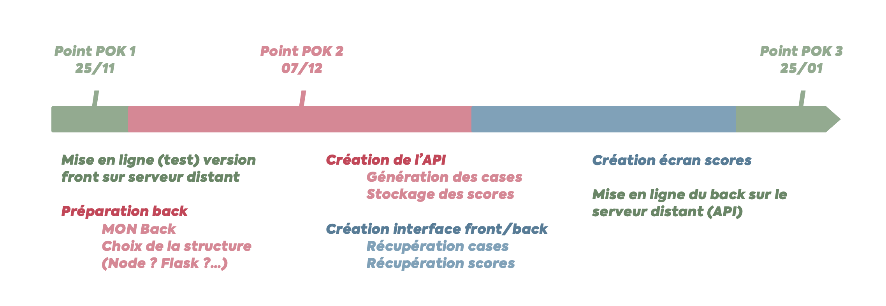

[POK] Find the Key (temps 2)
- POK
- 2022-2023
- temps 2
- JavaScript
- NodeJS
- Express
- Serveur distant
- Killian ROYANT
Find The Key est un jeu que j'ai développé durant mon S7. Le but est de trouver la clé placée aléatoirement sur un plateau puis de la ramener à la base en évitant les monstres. Il est codé en HTML/CSS/JS pur. Le desing a été réalisé depuis Adobe XD.
Le temps 2 est consacré à l'ajout d'une partie back-end avec NodeJS et Express et au déploiement sur un serveur distant.
Ressources
Introduction
Find The Key est un jeu que j'ai développé durant mon S7. Le but est de trouver la clé placée aléatoirement sur un plateau puis de la ramener à la base en évitant les monstres.

Durant le temps 1, j'ai eu l'occasion de résoudre les problèmes de compatibilité du site ainsi que de recréer la structure du HTML/CSS pour rendre l'application responsive. Le temps 2 sera consacré à l'ajout d'une partie back-end avec NodeJS et Express et au déploiement sur un serveur distant.
Objectif du temps 2 - Déployer sur un serveur distant
Mes objectifs à l'occasion de la deuxième partie de ce POK sont les suivants :
- Créer une partie back-end (API) pour générer le contenu des cases et sauvegarder les scores des joueurs (ATTENTION : UTILISER ORM (ex : sequelize))
- Déployer le site et l'API sur un serveur distant
Planning
Pour mener à bien ce projet, j'ai décidé de m'organiser en 4 étapes principales traitant les parties back (en rouge), serveur (en vert) et adaptation du front (en bleu).

On peut retrouver le détail du temps prévu et passé sur chaque étape dans le tableau ci-dessous :
| To-do | Temps passé | Temps prévu |
|---|---|---|
| Mise en ligne (test) version front sur serveur distant | 1 h | 1 h |
| Préparation du back | 7 h | 4 h |
| Création de l’API | 8 h | 5 h |
| Création interface front/back | 1 h | 4 h |
| Création écran scores | 0 h | 4 h |
| Mise en ligne du back sur le serveur distant (API) | 3 h | 2 h |
| Total | 20 h | 20 h |
(mis à jour le 24/01/2022)
Résultats
Résultats
Comme on peut le voir, j'ai dépassé le temps prévu pour la partie back. Cela est dû au fait que j'ai dû apprendre à utiliser NodeJS, Express et Sequelize et adapter mon code frontend à un environnement backend. Je n'ai ainsi pas pu réaliser l'écran des scores ni adapter correctement le front pour utiliser l'API.
J'ai néanmoins réussi à mettre en ligne la version front du jeu sur un serveur distant et à créer une API sur le serveur distant permettant de générer le contenu des cases. Il reste donc à créer la route qui permet de gérer le déplacement et adapter le front à l'API.
Pour utiliser l'API, il faut envoyer une requête POST à l'adresse suivante : http://node.cerfeuil.ovh1.ec-m.fr/newGame. Il faut envoyer une requête incluant un body contenant la taille du plateau souhaité. Par exemple, pour un plateau de 4x4, il faut envoyer le body suivant :
{
"size": 4
}Cette requête renverra alors un objet JSON contenant le plateau. Cette requête renverra toutes les cases mais uniquement le type des cases découvertes. Le vrai contenu des cases est néanmoins stocké en bases de données. Voici un aperçu d'une réponse :
{
"success": true,
"message": "New game created successfully",
"data": {
"game": {
"playerHasKey": false,
"id": 3,
"playerLives": 3,
"playerX": 0,
"playerY": 2,
"updatedAt": "2023-01-24T21:00:50.846Z",
"createdAt": "2023-01-24T21:00:50.846Z"
},
"cases": [
{
"id": 33,
"x": 0,
"y": 0,
"visibleType": "hidden",
"etat": "hidden",
"createdAt": "2023-01-24T21:00:50.915Z",
"updatedAt": "2023-01-24T21:00:50.915Z",
"gameId": 3
} // ... 15 autres cases
]
}
}Le code de l'API est disponible sur le Github du POK
Mise en place
Je détaille ci-dessous les différentes étapes que j'ai pu réaliser à l'aide d'explications générales applicables à un grand nombre de projets.
Mise en ligne (test) version front sur serveur distant
Pour commencer, j'ai décidé de mettre en ligne la version front du jeu sur un serveur distant. J'ai donc utilisé le service OVH pour créer un serveur et y déployer le site. Je présente ci-dessous comment créer un serveur OVH, ce que je n'ai pas fais en pratique car j'ai utilisé le serveur OVH1 de Centrale.
Connexion au serveur
Pour se connecter au serveur, il faut utiliser le protocole SSH. J'ai utilisé le terminal de mon ordinateur pour me connecter au serveur. Pour cela, il faut utiliser la commande suivante :
ssh username@adresse_serveurOn peut alors entrer le mot de passe du serveur pour se connecter. Pour ne pas avoir à entrer le mot de passe à chaque fois, il est possible de créer une clé SSH. Pour cela, il faut utiliser la commande suivante :
ssh-keygenOn peut alors entrer le chemin de la clé et le mot de passe. Une fois la clé créée, il faut l'ajouter au serveur avec la commande suivante :
ssh-copy-id username@adresse_serveurNavigation dans le serveur
Pour vérifier que la connexion est bien établie, on peut utiliser la commande suivante pour afficher le contenu du dossier courant :
lsPour se déplacer dans un dossier, on peut utiliser la commande suivante :
cd nom_dossierOn peut aussi créer un nouveau dossier avec la commande suivante :
mkdir nom_dossierEnfin, pour supprimer un dossier, on peut utiliser la commande suivante :
rm -r nom_dossierDéploiement du site
Pour déployer le site sur le serveur, on peut utiliser la commande suivante :
scp -r chemin_dossier username@adresse_serveur:/chemin_dossierOn peut alors entrer le mot de passe du serveur pour déployer le site. Pour vérifier que le site est bien déployé, on peut se rendre sur le navigateur et entrer l'adresse IP du serveur.
Préparation du back
Pour préparer le back, j'ai décidé de créer un projet Node.js avec la commande suivante :
npm initOn peut alors entrer les informations demandées. Une fois le projet créé, on peut installer les dépendances comme, par exemple, Express avec la commande suivante :
npm install expressJ'ai ensuite créé un fichier index.js pour créer mon API. Pour commencer, j'ai utilisé l'exemple tiré de la documentation d'Express ci-dessous qui permet d'afficher un message dans le navigateur :
const express = require('express');
const app = express();
const port = 3000;
app.get('/', (req, res) => {
res.send('Hello World!');
});
app.listen(port, () => {
console.log(`Example app listening at http://localhost:${port}`);
});On pourra ensuite lancer le serveur Node.js avec la commande suivante :
node index.jsOn pourra alors se rendre sur le navigateur et entrer l'adresse suivante pour voir afficher le message Hello World! :
http://localhost:3000Mise en ligne (test) version back sur serveur distant
Importation du fichier index.js dans le serveur
Pour importer le fichier index.js dans le serveur, on peut utiliser la commande suivante :
scp index.js username@adresse_serveur:/chemin_dossierOn peut également utiliser un outil tel que FileZilla pour importer le fichier index.js dans le serveur via l'interface graphique.
Installation de Node.js sur le serveur
On peut ensuite se connecter au serveur avec la commande suivante :
ssh username@adresse_serveurOn peut alors entrer le mot de passe du serveur. Une fois connecté, on peut ensuite installer Node.js avec la commande suivante :
sudo apt install nodejsOn peut ensuite installer npm avec la commande suivante :
sudo apt install npmPour vérifier que Node.js et npm sont bien installés, on peut utiliser les commandes suivantes :
node -v
npm -vOn pourra ensuite installer les dépendances du projet avec la commande suivante :
npm install expressLancement du serveur
On peut ensuite lancer le serveur avec la commande suivante :
node index.jsOn peut alors se rendre sur le navigateur et entrer l'adresse suivante :
http://adresse_serveur:3000On peut alors voir le message Hello World!.
Pour arrêter le serveur, on peut effectuer la combinaison de touches Ctrl + C.
Laisser le serveur tourner en arrière-plan
Après avoir lancé le serveur, on remarque que celui-ci s'arrête dès que l'on quitte la connexion SSH. Il est donc nécessaire de laisser le serveur tourner en arrière-plan.
Pour laisser le serveur tourner en arrière-plan, on peut utiliser un outil tel que screen qui permet de lancer des programmes en arrière-plan. On peut créer un screen avec la commande suivante :
screen -S nom_du_screenOn peut alors relancer le serveur avec la commande suivante :
node index.jsEnfin, on pourra quitter le screen avec le raccourci Ctrl + A + D.
Le serveur continuera alors de tourner en arrière-plan.
Pour revenir sur le screen et arrêter le serveur, on utilisera la commande suivante :
screen -r nom_du_screenOn pourra enfin arrêter le serveur avec Ctrl + C.
Création de l'API
Pour créer l'API nécessaire au projet, j'ai utilisé Node.js et Express accompagnés d'une base de données PostgreSQL.
Création de la base de données
Pour créer la base de données, on peut utiliser la commande suivante :
createdb nom_base_de_donneesOn pourra alors s'en servir dans notre fichier index.js. Nous devons ensuite installer les diverses dépendances nécessaires à la base de données et à l'API avec la commande suivante :
npm install express sequelize pg body-parserConfiguration de la connexion à la base de données
On commence par importer les dépendances nécessaires à la connexion à la base de données :
const express = require('express');
const Sequelize = require('sequelize');
const bodyParser = require('body-parser');On peut ensuite créer la connexion à la base de données :
const sequelize = new Sequelize("postgres://<username>:<password>@<host>:<port>/<database>");On peut alors tester la connexion à la base de données avec le code suivant :
sequelize.authenticate().then(() => {
console.log('Connection has been established successfully.');
}).catch(err => {
console.error('Unable to connect to the database:', err);
});Création du modèle
On peut ensuite créer le modèle de la base de données avec le code suivant :
const User = sequelize.define('user', {
id: {
type: Sequelize.INTEGER,
primaryKey: true,
autoIncrement: true
},
username: {
type: Sequelize.STRING,
allowNull: false
},
password: {
type: Sequelize.STRING,
allowNull: false
}
});On peut ensuite créer la table dans la base de données avec le code suivant :
User.sync().then(() => {
console.log('Table created');
});Création des routes
On peut ensuite créer les routes de l'API avec le code suivant :
app.get('/users', (req, res) => {
User.findAll().then(users => {
res.json(users);
});
});
app.get('/users/:id', (req, res) => {
User.findById(req.params.id).then(user => {
res.json(user);
});
});
app.post('/users', (req, res) => {
User.create(req.body).then(user => {
res.json(user);
});
});
app.put('/users/:id', (req, res) => {
User.update(req.body, {
where: {
id: req.params.id
}
}).then(() => {
res.json(req.body);
});
});
app.delete('/users/:id', (req, res) => {
User.destroy({
where: {
id: req.params.id
}
}).then(() => {
res.json(req.params.id);
});
});On peut ensuite lancer le serveur avec la commande suivante :
node index.jsOn peut alors se rendre sur le navigateur et entrer l'adresse suivante :
http://adresse_serveur:3000/usersOn peut alors voir la liste des utilisateurs.
Connexion de l'API au projet
On peut ensuite modifier le projet pour qu'il puisse se connecter à l'API. Pour cela, on va utiliser la méthode fetch() de JavaScript qui permet de faire des requêtes HTTP.
On peut commencer par créer un fichier api.js qui contiendra les fonctions permettant de se connecter à l'API. On peut ensuite créer les fonctions permettant de se connecter à l'API :
export function getUsers() {
return fetch('http://adresse_serveur:3000/users').then(response => response.json());
}
export function getUser(id) {
return fetch('http://adresse_serveur:3000/users/' + id).then(response => response.json());
}
export function createUser(user) {
return fetch('http://adresse_serveur:3000/users', {
method: 'POST',
headers: {
'Content-Type': 'application/json'
},
body: JSON.stringify(user)
}).then(response => response.json());
}
export function updateUser(user) {
return fetch('http://adresse_serveur:3000/users/' + user.id, {
method: 'PUT',
headers: {
'Content-Type': 'application/json'
},
body: JSON.stringify(user)
}).then(response => response.json());
}
export function deleteUser(id) {
return fetch('http://adresse_serveur:3000/users/' + id, {
method: 'DELETE'
}).then(response => response.json());
}On peut ensuite modifier le fichier index.js pour qu'il puisse se connecter à l'API. On peut commencer par importer les fonctions permettant de se connecter à l'API :
import { getUsers, getUser, createUser, updateUser, deleteUser } from './api.js';On pourra alors utiliser les fonctions de l'API dans le fichier index.js. On peut par exemple afficher la liste des utilisateurs avec le code suivant :
getUsers().then(users => {
console.log(users);
});